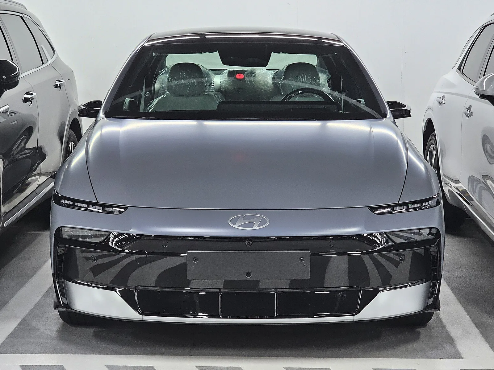
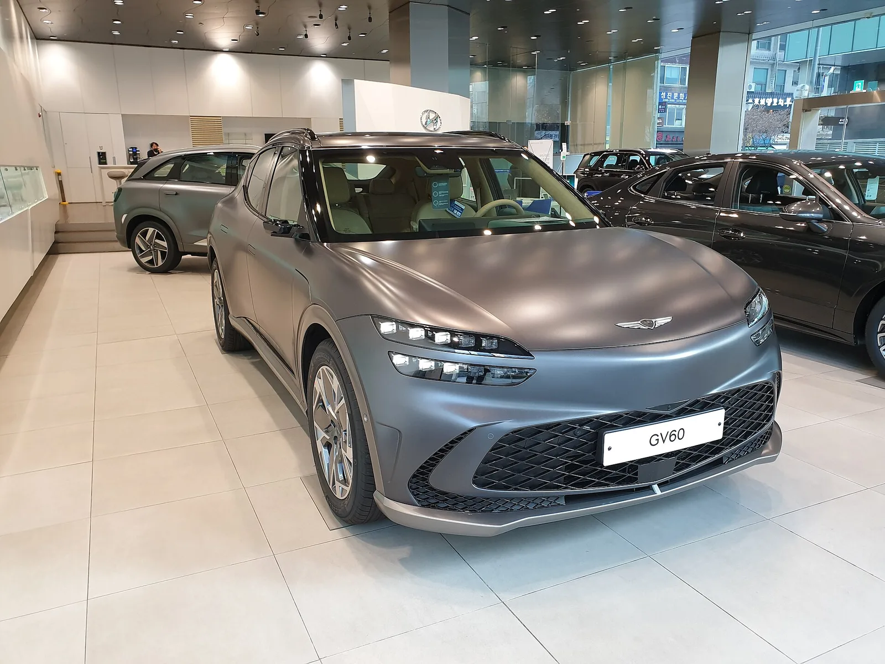
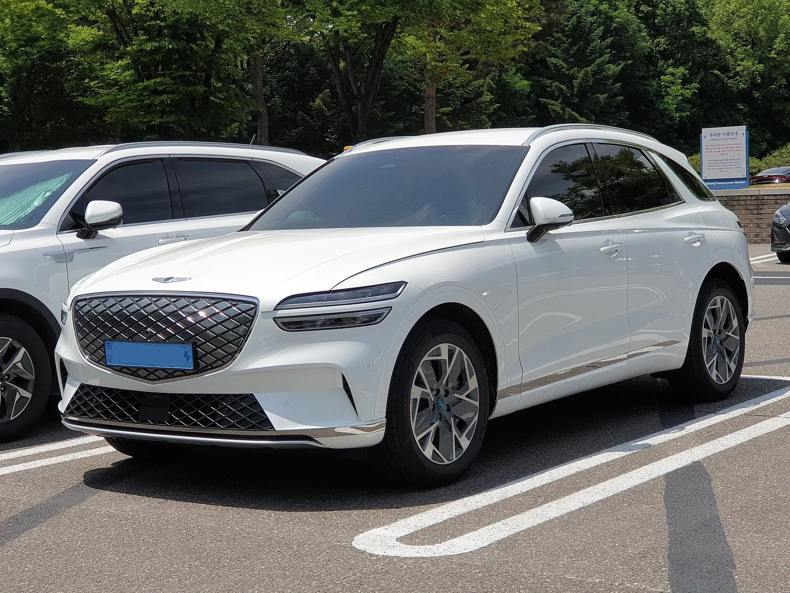
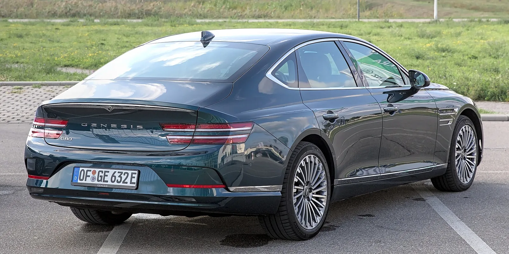

▲ 현대차가 아이오닉5 N을 포함한 전기차 6종에 대해 고전압배터리 BMS 결함으로 무상 리콜을 공표했다 ⓒ Ethan Llamas, Wikimedia Commons (CC BY-SA 4.0)
내 전기차가 갑자기 시동이 꺼지거나 고전압 회로가 차단된다면? 실제로 이런 위험 때문에 현대차가 전기차 6종을 대상으로 자발적 리콜에 나섰다.
현대자동차는 아이오닉5 N, 아이오닉6, 아이오닉6 N과 제네시스 GV60, GV70, G80 등 전기차 6종에 대해 고전압배터리 관리시스템(BMS) 결함을 이유로 자발적 무상 리콜을 공표했다. 리콜공표기간은 2026년 8월 31일부터 2028년 2월 29일까지로, 약 1년 6개월에 걸쳐 순차적으로 진행된다. 부품 교체 없이 소프트웨어 업데이트만으로 조치되는 만큼, 대상 차종 소유자라면 서비스센터 방문 일정부터 확인해두는 게 좋다.
1. 리콜 개요 — 무엇이, 왜 문제였나
이번 리콜의 핵심은 고전압배터리 내부로 수분이 스며들 수 있다는 점이다. 현대차에 따르면 결함이 발생한 차량들은 고전압배터리의 가스배출장치를 통해 수분이 유입될 가능성이 있다. 가스배출장치는 배터리 내부 압력이나 이상 가스를 외부로 내보내기 위한 구조물인데, 이 통로를 거꾸로 타고 수분이 들어가면서 문제가 생긴다.
배터리 내부로 유입된 수분은 온도 감지 센서의 오작동을 유발할 수 있다. 온도 감지에 오류가 생기면 차량은 안전을 위해 고전압 회로를 자동으로 차단하는데, 이 차단이 주행 중에 발생하면 운전자 의도와 무관하게 동력이 상실될 위험이 있다는 게 현대차의 설명이다. 다행히 이번 리콜은 부품 교체가 필요 없는 소프트웨어 업데이트로 조치되며, 비용은 전액 무상이다.

▲ 리콜 대상에 포함된 아이오닉6. 출고 전 시트에 보호 비닐이 씌워진 모습에서 알 수 있듯, 이번 리콜은 특정 생산 기간에 만들어진 차량만 해당한다 ⓒ Damian B Oh, Wikimedia Commons (CC BY-SA 4.0)
2. 대상 차종과 생산 기간 — 내 차도 해당할까
이번 리콜은 전 차종에 걸쳐 적용되는 것이 아니라, 모델별로 특정 생산 기간에 만들어진 차량만 대상이다. 아이오닉5 N처럼 2년 넘게 생산된 기간이 통째로 포함된 차종이 있는가 하면, GV70처럼 상대적으로 짧은 생산 구간만 해당하는 차종도 있다. 정확한 대상 여부는 차대번호로만 확인할 수 있다.
| 차종 | 제작 기간 |
|---|---|
| 아이오닉5 N | 2023년 8월 18일 ~ 2026년 5월 6일 |
| 아이오닉6 | 2024년 11월 23일 ~ 2026년 4월 10일 |
| 아이오닉6 N | 2025년 3월 26일 ~ 2026년 4월 30일 |
| 제네시스 GV60 | 2025년 2월 20일 ~ 2026년 4월 15일 |
| 제네시스 GV70(전동화) | 2024년 12월 31일 ~ 2026년 4월 1일 |
| 제네시스 G80(전동화) | 2024년 3월 19일 ~ 2026년 2월 23일 |
가장 정확한 방법은 자동차리콜센터에서 본인 차량의 차대번호를 직접 입력해 조회하는 것이다. 자동차리콜센터 바로가기
✅ 현재까지 확인된 것과 아직 확인되지 않은 것
· 확인됨: 대상 6개 차종의 명칭과 각 차종별 제작 기간, 결함 발생 메커니즘(가스배출장치→수분 유입→온도 감지 센서 오작동→고전압 회로 차단), 무상 소프트웨어 업데이트라는 시정 방법
· 확인 안 됨: 리콜 대상 전체 대수, 실제 결함으로 인한 사고·화재 발생 사례 유무(현재까지 보도된 내용에는 포함되지 않음)
· 대수와 세부 통계는 국토교통부·한국교통안전공단의 정식 리콜 공고가 자동차리콜센터에 게시되는 대로 갱신될 예정이다
3. 제네시스 3종도 포함 — GV60·GV70·G80까지
이번 리콜에서 눈에 띄는 대목은 제네시스 프리미엄 라인업까지 포함됐다는 점이다. GV60은 제네시스 최초의 전용 전기차 플랫폼(E-GMP) 모델이고, GV70과 G80은 각각 내연기관 모델을 기반으로 한 전동화 버전이다. 세 차종 모두 현대차의 아이오닉 시리즈와 배터리 시스템을 공유하는 만큼, 같은 결함 메커니즘이 동일하게 적용된 것으로 보인다.

▲ 제네시스 최초의 전용 전기차 GV60. 2025년 2월~4월 생산분이 이번 리콜 대상에 포함된다 ⓒ Damian B Oh, Wikimedia Commons (CC BY-SA 4.0)

▲ 그릴 하단 파란색 배지로 전동화 모델임을 알 수 있는 제네시스 GV70. 2024년 12월~2026년 4월 생산분이 리콜 대상이다 ⓒ Alexander Migl, Wikimedia Commons (CC BY-SA 4.0)
제네시스 소유자는 현대차 소유자와 문의 창구가 다르다는 점도 알아둘 필요가 있다. 제네시스 전용 고객센터(080-700-6000)를 통해 별도로 안내받을 수 있다.

▲ 제네시스 G80 후면부. 전동화 모델은 2024년 3월~2026년 2월 생산분이 이번 리콜에 포함된다 ⓒ Damian B Oh, Wikimedia Commons (CC BY-SA 4.0)
4. 시정 방법과 확인 절차 — 부품 교체 없이 소프트웨어로 해결
이번 리콜의 시정 방법은 비교적 간단하다. 배터리 셀이나 모듈 등 부품을 교체하는 것이 아니라, 고전압배터리를 제어하는 BMS(Battery Management System) 소프트웨어를 최신 버전으로 업데이트하는 방식이다. 서비스센터 방문 시 별도의 부품 대기 없이 당일 조치가 가능할 것으로 예상된다.
| 구분 | 내용 |
|---|---|
| 대상 여부 확인 | 자동차리콜센터(car.go.kr)에서 차대번호 조회 |
| 현대차 문의 | 080-600-6000 |
| 제네시스 문의 | 080-700-6000 |
| 조치 내용 | 고전압배터리 BMS 소프트웨어 무상 업데이트(부품 교체 없음) |
| 비용 | 전액 무상 |
소프트웨어 업데이트 이력은 현대차 무선 소프트웨어 업데이트(OTA) 공지 페이지에서도 함께 확인할 수 있다. 리콜 대상 차량이라면 서비스센터를 통한 시정조치 외에, 차량 자체 OTA로 순차 배포될 가능성도 열려 있다.
5. 왜 또 배터리 리콜인가 — 최근 현대차·기아 전기차 BMS 이슈
현대차·기아의 전기차 배터리 관련 리콜이 이번이 처음은 아니다. 지난 2026년 2월에는 코나 일렉트릭, 아이오닉 개조 전기차, 일렉시티, 일렉시티 이층버스, 기아 니로 EV 등에서 BMS 소프트웨어 설계 미흡으로 고전압 배터리 이상을 사전에 감지하지 못할 가능성이 확인돼 4만여 대가 리콜된 바 있다. 당시에는 화재로 이어질 수 있다는 우려가 함께 제기됐다.
이번 아이오닉·제네시스 6종 리콜은 2월 리콜과는 결함 부위(가스배출장치를 통한 수분 유입)와 대상 차종이 달라 별개의 사안으로 봐야 한다. 다만 두 사례 모두 BMS가 고전압배터리 이상을 제때 감지하고 안전하게 차단하는 역할을 제대로 수행하지 못했다는 공통점이 있다. 전기차 보급이 늘어나면서 배터리 관리 소프트웨어의 신뢰성이 그만큼 중요한 품질 이슈로 떠오르고 있는 셈이다.
📍 리콜과 무상수리, 뭐가 다른가
'리콜'은 자동차관리법상 안전 관련 결함이 확인돼 정부에 공식 신고하고 소유자에게 통지 의무가 따르는 시정조치다. 반면 '무상수리'는 제작사가 자체적으로 비용을 부담해 품질 문제를 고쳐주는 서비스로, 법적 신고 의무는 없다. 이번 건은 국토교통부·한국교통안전공단에 공식 신고된 자발적 리콜로, 소유자에게 개별 통지가 이뤄진다.
6. 요약
현대자동차가 아이오닉5 N, 아이오닉6, 아이오닉6 N, 제네시스 GV60, GV70, G80 등 전기차 6종에 대해 고전압배터리 BMS 결함으로 자발적 무상 리콜을 공표했다. 리콜공표기간은 2026년 8월 31일부터 2028년 2월 29일까지다.
원인은 고전압배터리 가스배출장치를 통한 수분 유입으로, 이로 인해 온도 감지 센서가 오작동하면 안전을 위해 고전압 회로가 자동 차단된다. 이 현상이 주행 중 발생하면 동력상실로 이어질 수 있어 소프트웨어 업데이트를 통한 선제적 조치가 결정됐다.
시정 방법은 부품 교체 없이 BMS 소프트웨어를 무상으로 업데이트하는 것이며, 대상 여부는 자동차리콜센터(car.go.kr)에서 차대번호로 확인할 수 있다. 대상 차종 소유자는 현대차(080-600-6000) 또는 제네시스(080-700-6000) 고객센터를 통해서도 안내받을 수 있다.